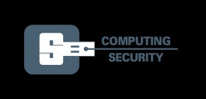

Many thanks to our sponsors for all they did to make the amazing BSidesROC 2016 possible!
Gold
Secure Network Technologies, Inc. is a full service information security firm dedicated to providing superior security services and delivering actionable, real world results. Secure Network staff understands what it takes to build a security program that fits the unique needs of any business. That’s why all of our services are customized to fit the requirements of any risk management situation.

Rochester Institute of Technology
Golisano College of Computing and Information Sciences
Department of Computing Security (CSec)
CSec provides an environment where students can develop an in-depth knowledge of computing security, while working on the cutting-edge of one of the fastest growing computing disciplines. Students receive a strong foundation in the supporting disciplines of programming, multimedia, and database systems. After building core competencies, students design their area of specialization by selecting five courses from over a dozen advance study courses offered in the areas of computing security.
Nuand is a local Rochester-based company that develops Software Defined Radio (SDR) platforms with Open-source software for students, hobbyists, and professionals. Their current offering, the bladeRF, is a versatile USB 3.0 device that provides full duplex operation up to 40 MSPS with an instantaneous bandwidth of 28 MHz. This device has found a home in numerous applications, including GSM and LTE base stations, digital television, GPS simulation, medial imaging research, and wireless security, just to name a few.
Senrio provides operational health and security monitoring for networked embedded devices (aka Internet of Things) in industrial control, medtech, and retail environments. Senrio passively monitors devices, giving visibility into their current and historical behavior while providing risk awareness and alerting for security compromises, operational issues, or misuse/misconfiguration. Senrio seamlessly integrates with SIEMs and firewalls allowing for immediate containment and remediation.

One of the nation’s top academic medical centers, the University of Rochester Medical Center forms the centerpiece of the University’s health research, teaching, patient care and community outreach missions. Over the last five years, the UR School of Medicine and Dentistry has received almost $1.3 billion in total research funding. The School ranks in the top quartile of U.S. academic medical centers in research funding from the National Institutes of Health, attracting nearly three times the federal funding received by the medical schools in Albany, Syracuse and Buffalo combined.

FireEye protects both large and small organizations committed to stopping advanced cyber threats, data breaches, and zero-day attacks. Organizations across various industries trust FireEye to secure their critical infrastructure and valuable assets, protect intellectual property and avoid bad press, costly fixes, and downtime.
Silver
Positron Security

Bronze
NCC Group
In-Kind